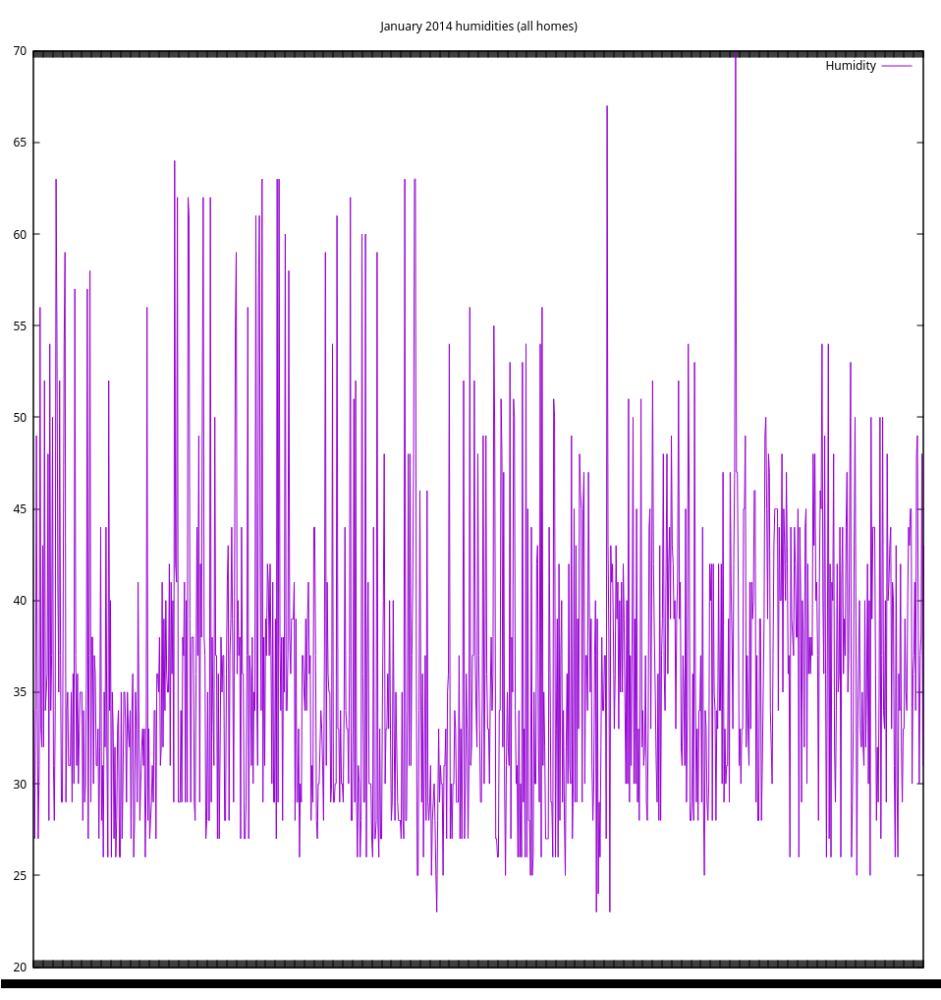
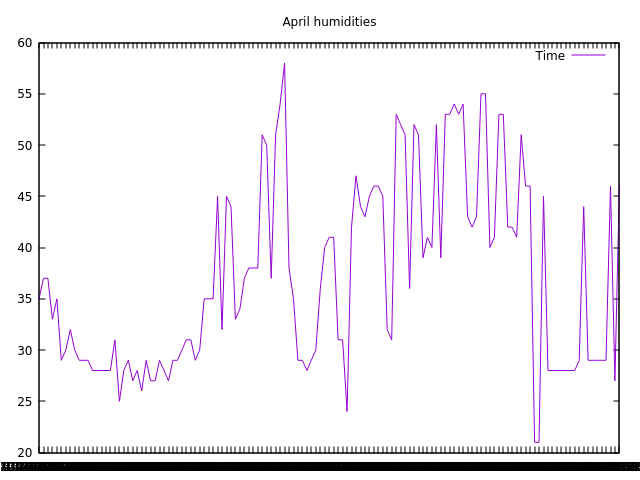

DM4T PROJECT
Querying Home Sensor Data with SPARQL
Matt Thompson
TEDDINET is a multi-disciplinary research project to monitor the energy usage of homes and appliances, and work out ways to reduce it. From 2013 up until 2016, millions of sensor readings have been taken from hundreds of homes, recording data such as power usage, temperature, humidity, and sound levels. Now that all the data have been gathered, we have to figure out how to process it to make it easy to query and visualise.
My role in this project is to:
- process the data to make it possible to send queries across multiple datasets
- devise some example queries that show some example visualisations
- design tools to help people convert their data so that we can send queries to it
- find ways to query and convert these data sets on the fly without having to store a converted version on our own servers
The first technologies I'm looking at are RDF and SPARQL, tools that were originally developed for the semantic web.
RDF is a way of describing graphs in subject-predicate-object triples. A simple way to think of these triples is that the subject and object refer to things (nodes on a graph), and the predicate describes their relationship (the edges on a graph).
Because it was designed for the semantic web, each part of a triple must refer to a specific instance of something using a unique identifier called a URI. A URI is similar to a web address, pointing to an address that can be used to identify a particular resource.
Examples of RDF triples are:
"Appliance 2 is an appliance":
<http://www.cs.bath.ac.uk/dm4t/enliten/appliance/2> <http://www.w3.org/1999/02/22-rdf-syntax-ns#type> <https://w3id.org/seas/Appliance>
"Appliance 3 contains device 276":
<http://www.cs.bath.ac.uk/dm4t/enliten/appliance/3> <https://w3id.org/seas#contains> <http://www.cs.bath.ac.uk/dm4t/enliten/device/276>
"Reading 15998574 came from house 10":
<http://www.cs.bath.ac.uk/dm4t/refit/reading/15998574> <http://purl.oclc.org/NET/ssnx/ssn#hasLocation> <http://www.cs.bath.ac.uk/dm4t/refit/home/house_10>
The above triples are in the "n-triples" format, which is an XML representation of RDF triples. This format is a little verbose, as it uses one line per triple. A more efficient RDF representation is the "Turtle" format, which allows us to specify a subject with all of its predicates and objects separated by semicolons (and indented for legibility).
An example of a power reading from our ENLITEN dataset in the "turtle" format looks like this:
<http://www.cs.bath.ac.uk/dm4t/enliten/reading/power/1> a <https://w3id.org/seas/PowerQuantity> , <https://w3id.org/seas/Observation> ; <http://www.cs.bath.ac.uk/dm4t/enliten/minValue> "0.0"^^<http://www.w3.org/2001/XMLSchema#float> ; <http://www.cs.bath.ac.uk/dm4t/enliten/maxValue> "1339.0"^^<http://www.w3.org/2001/XMLSchema#float> ; <http://www.cs.bath.ac.uk/dm4t/enliten/meanValue> "669.0"^^<http://www.w3.org/2001/XMLSchema#float> ; <https://w3id.org/seas#measurementInstrument> <http://www.cs.bath.ac.uk/dm4t/enliten/sensor/8> ; <https://w3id.org/seas#measurementSite> <http://www.cs.bath.ac.uk/dm4t/enliten/device/8> ; <https://w3id.org/seas#measurementStart> "2013-04-16T07:20:00"^^<http://www.w3.org/2001/XMLSchema#dateTime> ; <https://w3id.org/seas#measurementEnd> "2013-04-16T07:20:00"^^<http://www.w3.org/2001/XMLSchema#dateTime> .
This RDF snippet expresses:
- Power reading 1 is a power reading and observation
- its minimum value is 0.0
- its maximum value is 1339.0
- its mean value is 669.0
- the instrument used to measure it was sensor 8
- it originated from device 8
- the reading started and ended at 07:20am on April 16th, 2013
The beauty of RDF is the way it expresses data as a graph. This means that we should be able to query it without knowing too much about particular structure of the database its stored in. Contrast this with SQL, where one must know the exact layout of a database's tables in order to query it.
It also allows us to join graphs together, querying databases (known as triple stores in RDF parlance) from entirely separate locations with the same query. Querying across multiple datasets in this way is called federated querying.
Due to the expression of our data in terms of triples, we must query them with a special language called SPARQL. SPARQL resembles SQL on a superficial level, but it allows for much more expressive queries in terms of triples.
The ENLITEN Dataset
These SPARQL queries use the ENLITEN dataset gathered by the University of Bath. These data were gathered from 23 homes around the UK, taking readings on:
- appliance power usage
- gas usage
- carbon dioxide levels
- humidity levels
- light levels inside the home
- sound levels inside the home
- temperature inside the home
- motion data from inside the home
These data were originally gathered using sensors attached to Raspberry PIs, and stored in a mySQL database. In order for us to query them with SPARQL, we converted them into RDF triples to load into a Jena triple store (the process is described in this blog post). This allowed us to create a "SPARQL endpoint", a web service to which we can send SPARQL queries to retrieve our data.
A General SPARQL Query
The most basic SPARQL query possible would be:
"Get every subject, predicate and object in our datastore, and return them as "s", "p" and "o" variables. But we only want the first 10!"
Here is how we express that as a SPARQL query:
SELECT ?subject ?predicate ?object WHERE { ?subject ?predicate ?object } LIMIT 20
Certain keywords (SELECT and LIMIT) are used in much the same way as their SQL counterparts, but the naming of variables to be returned with the question mark (?) operator is new, as is their arrangement in triples. Once a user becomes familiar with SPARQL, it becomes a powerful, expressive and flexible way to query RDF triples. A good way to start learning the basics of SPARQL is with the Apache Jena SPARQL tutorial.
Sending the above query to our SPARQL endpoint located at http://mist.cs.bath.ac.uk/enliten/query returns the following 10 results:
It is clear that these are the first ten triples of millions (1.25 billion, to be exact). What if we want to query just a sample of the data, in order to get just enough for a representative visualisation without having to process millions of results?
Returning a Random Sample of Data
Let's try querying a subset of the data that returns millions of results: the humidity level readings. A good example query to try would be to get all humidity readings across all homes for April 2013.
A naive way to do this would be to order the data randomly and return a certain number of the randomly-ordered data:
PREFIX seas: <https://w3id.org/seas/> PREFIX sear: <https://w3id.org/seas#> PREFIX xsd: <http://www.w3.org/2001/XMLSchema#> PREFIX rdf: <http://www.w3.org/1999/02/22-rdf-syntax-ns#> SELECT ?value ?time WHERE { ?uri rdf:type seas:RelativeHumidity; sear:value ?value; sear:measurementStart ?time . FILTER ( month(?time) = 4 && year(?time) = 2013 ) } ORDER BY RAND() LIMIT 25
However, this query will result in a timeout on most SPARQL endpoints, taking more than 10 minutes to return a result. This is because it must order our (potentially millions of) humidity readings randomly before returning 25 of them. This is too expensive. Can we do better?
PREFIX seas: <https://w3id.org/seas/> PREFIX sear: <https://w3id.org/seas#> PREFIX xsd: <http://www.w3.org/2001/XMLSchema#> PREFIX rdf: <http://www.w3.org/1999/02/22-rdf-syntax-ns#> SELECT ?value ?time ?r WHERE { ?uri rdf:type seas:RelativeHumidity; sear:value ?value; sear:measurementStart ?time . BIND ( rand() AS ?r ) FILTER ( ?r < 0.01 && year(?time) = 2013 && month(?time) = 4 ) } LIMIT 1000
This query binds a random number to each result, then filters them down to only the results with random numbers below a certain threshold (0.01 in this case). This query will take too long and time out, however (with our server timeout threshold set to 30 seconds). This is because it is still going through every triple in the database, binding a random number to it, and also applying the filter comparators to find only the readings that match the month we want.
This is far too expensive! How can we make this more efficient?
PREFIX seas: <https://w3id.org/seas/> PREFIX sear: <https://w3id.org/seas#> PREFIX xsd: <http://www.w3.org/2001/XMLSchema#> PREFIX rdf: <http://www.w3.org/1999/02/22-rdf-syntax-ns#> SELECT ?value ?time ?r WHERE { { SELECT ?value ?time WHERE { ?uri rdf:type seas:RelativeHumidity; sear:value ?value; sear:measurementStart ?time . FILTER( year(?time) = 2014 && month(?time) = 1 ) } } BIND ( rand() AS ?r ) FILTER ( ?r < 0.001 ) } LIMIT 100
The above query first filters the data so that we only have the humidity readings from January 2014. Then it assigns a random number to each result, and filters those results so that only the random numbers below 0.001 are returned. Finally, we limit the results to 100 to show them in the following table:
| value | time | r |
|---|---|---|
| 35.0 | 2014-01-02T00:05:10 | 2.8322766466004623E-4 |
| 36.0 | 2014-01-02T20:45:05 | 4.601868144032961E-4 |
| 32.0 | 2014-01-02T21:10:14 | 8.132609329500884E-4 |
| 30.0 | 2014-01-03T03:35:09 | 8.591418591802347E-4 |
| 38.0 | 2014-01-03T06:21:01 | 9.060736738766284E-4 |
| 26.0 | 2014-01-03T22:20:16 | 8.596794224369209E-4 |
| 34.0 | 2014-01-04T07:20:09 | 4.487831413418908E-4 |
| 56.0 | 2014-01-05T02:55:08 | 1.026092729500272E-4 |
| 39.0 | 2014-01-05T05:55:09 | 9.590279442017735E-5 |
| 32.0 | 2014-01-05T11:25:06 | 3.521631447538365E-4 |
| 36.0 | 2014-01-05T16:05:05 | 9.316775287986356E-4 |
| 35.0 | 2014-01-05T18:15:09 | 6.857756220918221E-4 |
| 31.0 | 2014-01-05T20:35:15 | 6.319040832732936E-4 |
| 39.0 | 2014-01-06T03:45:11 | 9.075765234803912E-4 |
| 32.0 | 2014-01-06T11:55:08 | 1.9077939485623308E-4 |
| 37.0 | 2014-01-06T13:35:07 | 5.061647786218648E-4 |
| 36.0 | 2014-01-06T20:05:09 | 8.797623098150131E-4 |
| 40.0 | 2014-01-07T15:30:05 | 2.420547496551073E-6 |
| 61.0 | 2014-01-08T12:45:06 | 6.508380731595764E-5 |
| 40.0 | 2014-01-08T16:05:06 | 6.731353735501822E-4 |
| 63.0 | 2014-01-08T17:30:12 | 8.903736054207689E-4 |
| 38.0 | 2014-01-09T00:55:09 | 5.864460369248148E-4 |
| 65.0 | 2014-01-09T02:20:07 | 6.419733271380013E-4 |
| 60.0 | 2014-01-09T12:45:06 | 1.7341391682856866E-4 |
| 40.0 | 2014-01-09T18:05:05 | 6.639591887303009E-5 |
| 36.0 | 2014-01-09T21:05:04 | 2.7681285290703794E-4 |
| 34.0 | 2014-01-10T00:40:08 | 6.85223198533258E-5 |
| 40.0 | 2014-01-10T12:45:07 | 3.4359669006067683E-4 |
| 34.0 | 2014-01-10T15:05:07 | 5.470659489175134E-4 |
| 35.0 | 2014-01-10T21:10:07 | 8.485163901100767E-4 |
| 29.0 | 2014-01-11T03:00:14 | 2.947057897448868E-4 |
| 29.0 | 2014-01-11T03:50:11 | 2.986511900227029E-4 |
| 36.0 | 2014-01-11T07:50:08 | 6.53555096203351E-4 |
| 27.0 | 2014-01-11T13:45:08 | 6.137402336661157E-4 |
| 36.0 | 2014-01-11T16:05:07 | 3.273127376068885E-5 |
| 43.0 | 2014-01-12T04:20:08 | 6.951243645735294E-4 |
| 43.0 | 2014-01-12T04:25:05 | 7.425175356293723E-4 |
| 26.0 | 2014-01-12T11:55:57 | 4.612326086619323E-4 |
| 27.0 | 2014-01-12T16:06:13 | 5.28955550659238E-4 |
| 32.0 | 2014-01-13T20:55:06 | 4.1139152687330593E-4 |
| 43.0 | 2014-01-14T06:30:06 | 5.876203830592619E-4 |
| 34.0 | 2014-01-14T07:35:09 | 1.5501776970738845E-5 |
| 52.0 | 2014-01-15T03:25:11 | 7.79044558529618E-4 |
| 37.0 | 2014-01-15T20:00:09 | 5.538244812035575E-4 |
| 42.0 | 2014-01-16T02:30:06 | 7.839649762750867E-4 |
| 50.0 | 2014-01-16T17:35:10 | 8.856445010158032E-4 |
| 34.0 | 2014-01-16T20:55:09 | 9.627708452097927E-4 |
| 47.0 | 2014-01-16T23:50:09 | 3.442595044020891E-4 |
| 30.0 | 2014-01-17T04:40:06 | 9.214721164364503E-4 |
| 28.0 | 2014-01-17T05:25:12 | 6.275974406071416E-4 |
| 33.0 | 2014-01-17T06:00:07 | 9.308123539838453E-4 |
| 28.0 | 2014-01-19T17:20:04 | 5.632737511830355E-4 |
| 37.0 | 2014-01-20T18:15:03 | 8.584575972837571E-4 |
| 23.0 | 2014-01-21T09:00:08 | 6.355172988836699E-4 |
| 42.0 | 2014-01-21T17:15:08 | 4.950288259149005E-4 |
| 47.0 | 2014-01-21T19:35:11 | 3.518174918257788E-4 |
| 42.0 | 2014-01-22T04:35:07 | 8.483287254245075E-4 |
| 27.0 | 2014-01-22T09:55:13 | 5.96095139709929E-4 |
| 40.0 | 2014-01-22T11:25:13 | 5.231280217328216E-4 |
| 40.0 | 2014-01-23T00:35:08 | 2.392805430497802E-4 |
| 28.0 | 2014-01-23T00:45:10 | 9.727079686323581E-4 |
| 29.0 | 2014-01-23T01:35:13 | 3.247227225061655E-4 |
| 41.0 | 2014-01-23T05:40:05 | 3.4068789649155384E-4 |
| 38.0 | 2014-01-23T10:00:13 | 5.141512757136368E-4 |
| 35.0 | 2014-01-23T12:00:06 | 3.1720147036384816E-4 |
| 46.0 | 2014-01-23T23:15:06 | 6.17720012774936E-4 |
| 49.0 | 2014-01-24T00:40:10 | 2.8276711642638563E-4 |
| 40.0 | 2014-01-24T01:45:05 | 4.964913989609077E-4 |
| 37.0 | 2014-01-24T03:15:06 | 8.922096934100843E-4 |
| 46.0 | 2014-01-24T10:20:08 | 4.2194473487922046E-4 |
| 40.0 | 2014-01-24T10:20:13 | 5.096783784465098E-4 |
| 34.0 | 2014-01-24T12:40:09 | 3.222631851128588E-4 |
| 30.0 | 2014-01-24T13:35:17 | 8.866756008862886E-5 |
| 32.0 | 2014-01-24T19:00:10 | 6.20408142798401E-4 |
| 31.0 | 2014-01-24T21:20:12 | 6.274575884074318E-4 |
| 50.0 | 2014-01-25T01:20:04 | 5.519610024051769E-5 |
| 26.0 | 2014-01-25T07:40:14 | 8.388070009690551E-7 |
| 36.0 | 2014-01-25T12:01:08 | 8.57608120524711E-5 |
| 33.0 | 2014-01-25T08:31:07 | 7.940288132642914E-4 |
| 24.0 | 2014-01-25T15:20:06 | 6.1099587937119E-4 |
| 26.0 | 2014-01-25T12:12:11 | 9.63437031454073E-4 |
| 33.0 | 2014-01-25T18:10:08 | 1.1161702391981887E-4 |
| 35.0 | 2014-01-25T20:40:04 | 8.911383979124388E-4 |
| 35.0 | 2014-01-25T21:30:12 | 9.688857201561873E-4 |
| 29.0 | 2014-01-26T00:25:08 | 3.6608364935408755E-4 |
| 43.0 | 2014-01-26T02:05:07 | 3.679905533462424E-4 |
| 47.0 | 2014-01-26T08:35:12 | 7.259037407786328E-4 |
| 39.0 | 2014-01-26T09:15:14 | 4.8596172752324307E-4 |
| 40.0 | 2014-01-26T17:30:07 | 4.8101548431045416E-6 |
| 40.0 | 2014-01-26T19:25:06 | 5.523523046824241E-5 |
| 39.0 | 2014-01-27T02:25:10 | 8.393601802924033E-4 |
| 40.0 | 2014-01-27T02:35:07 | 9.566105571912065E-4 |
| 42.0 | 2014-01-27T05:25:06 | 1.2014326561415878E-4 |
| 42.0 | 2014-01-27T06:35:11 | 8.720766357539489E-5 |
| 31.0 | 2014-01-27T10:05:12 | 4.22383960900774E-5 |
| 33.0 | 2014-01-27T10:30:09 | 9.176846284034701E-4 |
| 31.0 | 2014-01-27T12:10:13 | 3.71034675041626E-4 |
| 35.0 | 2014-01-27T12:25:11 | 2.9767609927167094E-4 |
| 29.0 | 2014-01-27T21:45:09 | 9.749017723319486E-4 |
| 37.0 | 2014-01-27T23:20:07 | 4.7436378403353796E-4 |
As you can see, we have a nice spread of results over the entirety of the month of January. The "threshold" value of 0.001 determines the number of random samples that the query returns. In this case, it is about 100. Setting the threshold to 0.01 returns about 1000 results, but the query takes longer to complete. Here is a plot of the combined humidity readings for all enliten homes in January 2013, with the LIMIT set to 1000 and random sample threshold raised to 0.01:

And here are all humidities for the month of April, for all homes (100 random samples):

This random sampling method is orders of magnitude faster than the ORDER BY RAND() method, returning our results in under 2 seconds.
Federated
General
One of the main goals of our project is to query across multiple datasets at once. We can test this out by querying the REFIT dataset from the University of Strathclyde.
We've converted this data from the CSV source to RDF triples, using the same ontology as the ENLITEN dataset (the SEAS ontology), and put them on a separate SPARQL endpoint called "refit".
The following query gets the first 20 triples out of both SPARQL endpoints and joins them together:
SELECT ?s ?p ?o { { SERVICE <http://mist.cs.bath.ac.uk/enliten/query> { SELECT ?s ?p ?o WHERE { ?s ?p ?o } LIMIT 20 }} UNION { SERVICE <http://mist.cs.bath.ac.uk/refit/query> { SELECT ?s ?p ?o WHERE { ?s ?p ?o } LIMIT 20 }} }
With the following results:
This is quite nice, but what would be even better would be to get the combined power usage for all houses for January 2014:
PREFIX seas: <https://w3id.org/seas/> PREFIX sear: <https://w3id.org/seas#> PREFIX xsd: <http://www.w3.org/2001/XMLSchema#> PREFIX rdf: <http://www.w3.org/1999/02/22-rdf-syntax-ns#> PREFIX enliten: <http://www.cs.bath.ac.uk/dm4t/enliten/> SELECT ?uri ?value ?time { { SERVICE <http://mist.cs.bath.ac.uk/enliten/query> { SELECT ?value ?time ?r ?uri WHERE { { SELECT ?value ?time ?uri WHERE { ?uri rdf:type seas:PowerQuantity; enliten:meanValue ?value; sear:measurementStart ?time . FILTER( year(?time) = 2014 && month(?time) = 1 ) } } BIND ( rand() AS ?r ) FILTER ( ?r < 0.01 ) } LIMIT 100 }} UNION {SERVICE <http://mist.cs.bath.ac.uk/refit/query> { SELECT ?value ?time ?r ?uri WHERE { { SELECT ?value ?time ?uri WHERE { ?uri rdf:type seas:PowerQuantity; sear:value ?value; sear:measurementStart ?time . FILTER( year(?time) = 2014 && month(?time) = 1 ) } } BIND ( rand() AS ?r ) FILTER ( ?r < 0.001 ) } LIMIT 100}} } ORDER BY ASC(?time)
Though we are able to query across datasets, there are a number of issues with this approach:
- The query is quite complicated to formulate and understand, especially when trying to randomly sample the data
- We have to guess the threshold values to select the random samples from. These values should be proportional to the number of triples being sampled from, so in theory we could use SPARQL's COUNT() aggregator function to get this information. In practice, however, the COUNT() function takes a long time to return a value, too long to be practical for our uses.
- Even with a lower threshold value, the data from the refit dataset are skewed towards the days at the start of the month. Lowering the threshold should solve this in theory, but again in practice it proves to be impractical: lowering the number to the point where it should return a good spread of data increases the time required to process the query to at least 10 minutes
Conclusion
SPARQL and RDF have many strengths for semantic querying of data. However, for our purposes it has presented several challenges. The largest is that we need a quick way to get a random sample of the data, which is both difficult to describe in SPARQL and takes a long time for any triple store to return. The takeaway from this experiment is that we need to explore hybrid systems that combine the flexible semantic querying capabilities of RDF and SPARQL with the streaming capabilities of other data formats.